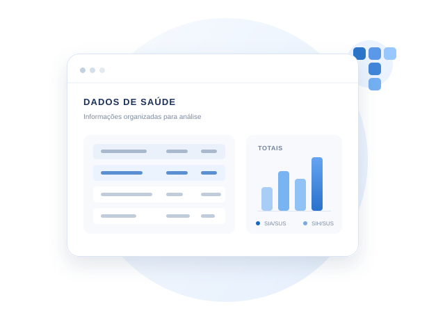
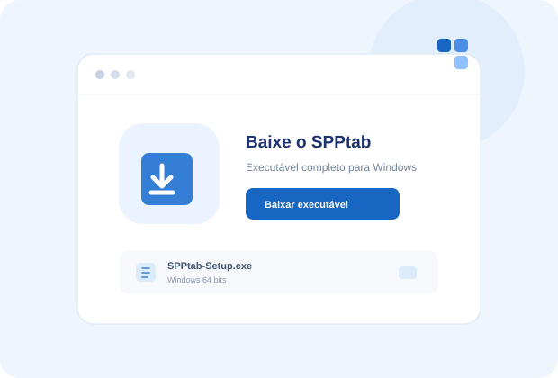
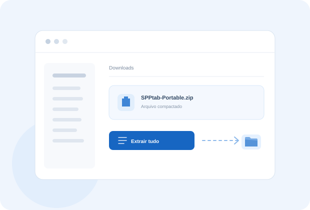
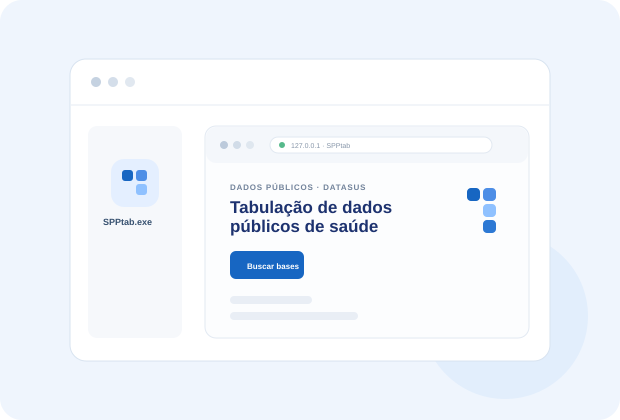

Dados públicos · DATASUS
Tabulação de dados
públicos de saúde.
Uma forma mais direta de buscar arquivos ambulatoriais e hospitalares, preparar as bases e criar tabulações com as definições oficiais.

Primeiros passos
Baixe e abra o SPPtab.
Aplicativo para computadorFunciona em Windows 64 bits. Ainda não há uma versão para celular.

Passo 01
Baixe um único executável.
O SPPtab vem em um único arquivo para Windows 64 bits. Não é necessário baixar nem extrair uma pasta.
Baixar SPPtab-Setup.exeUm executável · Windows 64 bits
Passo 02
Abra o arquivo baixado.
Dê dois cliques em SPPtab-Setup.exe. O próprio aplicativo prepara os componentes e abre o SPPtab.
Preparação automática na primeira abertura.
Passo 03
Use o SPPtab no navegador.
O SPPtab abre no navegador padrão. Nas próximas vezes, use o atalho criado na Área de Trabalho. Para consultar o DATASUS, é necessário estar conectado à internet.
Não precisa instalar XAMPP, PHP ou Python.Recursos da plataforma
Uma rotina mais simples,
da busca à tabulação.
As principais etapas do trabalho ficam organizadas em um só lugar, com informações claras para acompanhar cada arquivo.
Busca por competência
Consulte os arquivos disponíveis por sistema, ano e mês. Os itens já baixados aparecem identificados.
Conversão acompanhada
Converta a base e acompanhe o avanço até que ela esteja pronta para leitura e tabulação.
Tabulação com contexto
Monte linhas e colunas, refine categorias e consulte o resultado com totais e descrições.
Leitura de dados públicos
Mais contexto para cada cruzamento.
O SPPtab combina as bases públicas com as definições de cada sistema para facilitar a seleção de informações e a leitura dos resultados.
VISÃO DE ANÁLISEDados organizados para consulta Estruturado
LINHAS · COLUNASFILTROS · TOTAIS
Escopo atual
Uma primeira etapa com foco definido.
Nesta fase inicial, a plataforma atende às bases ambulatoriais e hospitalares do Pará. O objetivo é facilitar o acesso e a leitura de informações públicas do DATASUS.
02Sistemas de informação
03Etapas integradas
PAEstado de cobertura
SPPtab para Windows